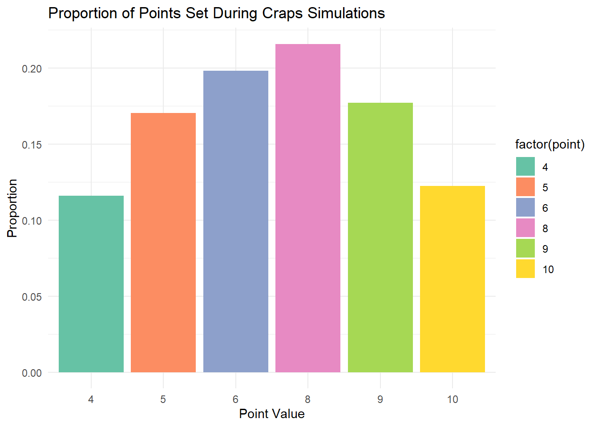
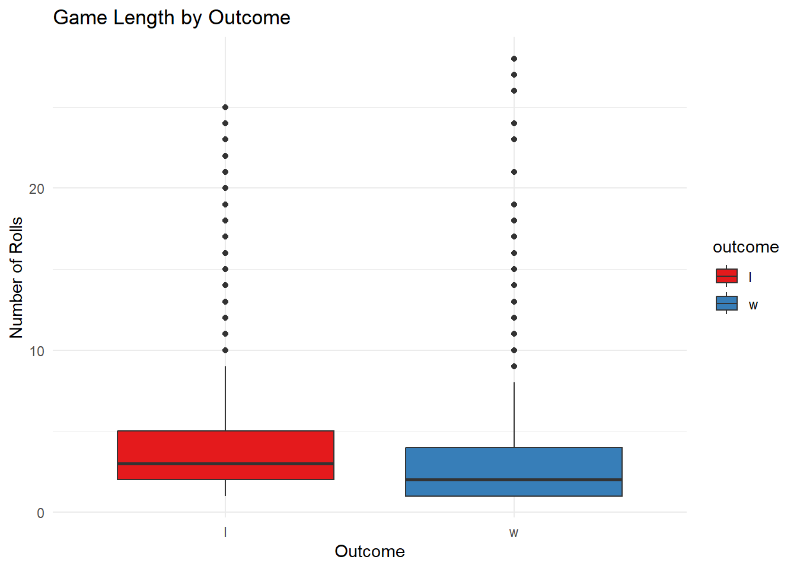

# Load required libraries
library(dplyr)
library(ggplot2)
library(kableExtra)
# Source the craps functions defined previously
source("craps-code.R")
# Set the number of simulations
set.seed(432) # For reproducibility
num_simulations <- 10000 # Number of games to simulate
# Run the simulations using the `run_craps_simulation` function
simulation_results <- run_craps_simulation(num_simulations)Simulation of Craps Code
This document uses the craps code functions to explore interesting probabilities and distributions, helping understand the game mechanics through data.
1. Simulating Craps Games
Problem Statement
Before analyzing probabilities and distributions, we need to generate data by simulating multiple games of craps.
Code
2. Distribution of Points
Problem Statement
What is the distribution of points?
Code
# Filter games with a valid point set
point_games <- simulation_results %>%
filter(!is.na(point))
# Count occurrences of each point
point_distribution <- point_games %>%
group_by(point) %>%
summarize(count = n()) %>%
mutate(proportion = count / sum(count)) %>%
arrange(desc(count))
# Display the table
point_distribution %>%
kbl(
caption = "Distribution of Points Set During Craps Simulations",
col.names = c("Point", "Count", "Proportion")
) %>%
kable_styling(full_width = FALSE, bootstrap_options = c("striped", "hover"))| Point | Count | Proportion |
|---|---|---|
| 8 | 1453 | 0.2158669 |
| 6 | 1334 | 0.1981875 |
| 9 | 1193 | 0.1772396 |
| 5 | 1147 | 0.1704056 |
| 10 | 824 | 0.1224187 |
| 4 | 780 | 0.1158817 |
Visualization
# Plot point distribution
ggplot(point_distribution, aes(x = factor(point), y = proportion, fill = factor(point))) +
geom_bar(stat = "identity") +
labs(
title = "Proportion of Points Set During Craps Simulations",
x = "Point Value",
y = "Proportion"
) +
theme_minimal() +
scale_fill_brewer(palette = "Set2")
3. Probability of Winning After Entering the Point Phase
Problem Statement
What is the probability of winning after entering the Point Phase?
Code
# Calculate total games and wins in the point-roll phase
total_point_games <- nrow(point_games)
total_point_wins <- sum(point_games$outcome == "w")
probability_win_point_phase <- total_point_wins / total_point_games
# Display the result in a table
data.frame(
"Total Point Games" = total_point_games,
"Wins in Point Phase" = total_point_wins,
"Probability of Winning in Point Phase" = probability_win_point_phase
) %>%
kbl(caption = "Probability of Winning in Point Phase") %>%
kable_styling(full_width = FALSE, bootstrap_options = c("striped", "hover"))| Total.Point.Games | Wins.in.Point.Phase | Probability.of.Winning.in.Point.Phase |
|---|---|---|
| 6731 | 2808 | 0.4171743 |
4. Summary of Wins and Losses
Problem Statement
What is the total number of wins and losses across all games?
Code
# Count wins and losses
win_loss_summary <- simulation_results %>%
group_by(outcome) %>%
summarize(count = n(), proportion = count / nrow(simulation_results))
# Display the summary
win_loss_summary %>%
kbl(
caption = "Summary of Wins and Losses",
col.names = c("Outcome", "Count", "Proportion")
) %>%
kable_styling(full_width = FALSE, bootstrap_options = c("striped", "hover"))| Outcome | Count | Proportion |
|---|---|---|
| l | 5008 | 0.5008 |
| w | 4992 | 0.4992 |
5. Variability in Game Lengths
Problem Statement
How does the length of a game vary between wins and losses?
Code
# Compare game lengths between wins and losses
simulation_results %>%
group_by(outcome) %>%
summarize(mean_rolls = mean(n_rolls), sd_rolls = sd(n_rolls)) %>%
kbl(
caption = "Game Length Variability by Outcome",
col.names = c("Outcome", "Mean Rolls", "Standard Deviation")
) %>%
kable_styling(full_width = FALSE, bootstrap_options = c("striped", "hover"))| Outcome | Mean Rolls | Standard Deviation |
|---|---|---|
| l | 3.809105 | 3.068667 |
| w | 3.035256 | 2.974068 |
Visualization
# Boxplot of game lengths by outcome
ggplot(simulation_results, aes(x = outcome, y = n_rolls, fill = outcome)) +
geom_boxplot() +
labs(
title = "Game Length by Outcome",
x = "Outcome",
y = "Number of Rolls"
) +
theme_minimal() +
scale_fill_brewer(palette = "Set1")
Discussion
The results above show wins are associated with games that are 0.8 games shorter on average. Part of this is explained by the fact a direct win is more likely to happen than a direct loss. To illustrate this, we break down all the possible outcomes that lead to direct wins and direct losses:
Direct win (7 and 11): combinations include (1,6), (2,5), (3,4), (4,3), (5,2), (6,1), (5,6) and (6,5), totaling 8 different combinations out of 36 total. This translates to around 22% of all games.
Direct loss (2, 3 and 12): combinations include (1,1), (1,2), (2,1) and (6,6), totaling 4 different combinations. This translates to around 11% of all games.
By looking further into games that go through a point phase, which compise around 67% of all games, we analyze the length of point phase in each winning and losing scenario:
- Point loss (7): combinations include (1,6), (2,5), (3,4), (4,3), (5,2) and (6,1), totaling 6 different combinations. This is around 17% of all combinations in a point phase no matter what the point result is.
Against:
Point win (4): combinations include (1,3), (2,2) and (3,1) totaling 3 different combinations. This is 8% of all combinations in a point phase that happens in 8% of the initial rolls.
Point win (5): combinations include (1,4), (2,3), (3,2) and (4,1) totaling 4 different combinations. This is 11% of all combinations in a point phase that happens in 8% of the initial rolls.
Point win (6): combinations include (1,5), (2,4), (3,3), (4,2) and (5,1), totaling 5 different combinations. This is 14% of all combinations in a point phase that happens in 8% of the initial rolls.
Point win (8): combinations include (2,6), (3,5), (4,4), (5,3) and (6,2), totaling 5 different combinations. This is 14% of all combinations in a point phase that happens in 14% of the initial rolls.
Point win (9): combinations include (3,6), (4,5), (5,4) and (6,3), totaling 4 different combinations. This is 11% of all combinations in a point phase that happens in 8% of the initial rolls.
Point win (10): combinations include (4,6), (5,5) and (6,4), totaling 3 different combinations. This is 8% of all combinations in a point phase that happens in 8% of the initial rolls.
For games that enter the Point Phase (67% of all games), there is a weighted average of approximately 12% chance of rolling a winning combination and a consistent 17% chance of rolling a loss (since only one result leads to a loss). This implies that games in the Point Phase are expected to be shorter when they end in a loss. However, this effect counteracts the shorter game lengths seen in direct wins compared to direct losses. Despite this, wins still average 0.8 rolls shorter than losses, indicating that the Point Phase effect does not completely offset the difference in length between direct wins and direct losses. Let’s explore this further.
If we account the chance of getting a winning result in a point game is 12% on average and point games comprise 67% of all games, this gives us 8% chance of getting a winning result in a point game with respect to all games. This, along with 22% chance of a direct win, adds up to a total of 30%. On the other hand, the chance of losing in a point game with respect to all games is around 11%. This, along with 11% chance of getting a direct loss, adds up to 22%. This means wins, on a global scale, should be associated with less rolls, which is what our results show. This approach is not one to be lauded for accuracy, but it goes a long way to explain and rationalize the variability in game length we obtained in the simulation.
Summary
This document analyzes craps simulations to uncover interesting probabilities and patterns.
The distribution of points during the Point Phase
Point outcomes that result from more combinations of two dice being rolled are more likely to occur, which makes sense. We can see that Point outcome 8, which results from [(2,6), (3,5), (4,4), (5,3), (6,2)], and Point outcome 6, which results from 5 combinations too, correspond to the two highest probabilities.
The probability of winning in the Point Phase
You are more likely to lose than to win when entering a Point Phase. This aligns with the fact a roll of 7, which results in a loss, is more likely to happen than any Point roll that leads to a win. A roll of 7 results from 6 combinations [(1,6), (2,5), (3,4), (4,3), (5,2), (6,1)], and therefore, has a higher probability to occur.
Variability in game lengths across outcomes.
Wins are associated with shorter games. This is due to the fact a direct win is more likely to happen than a direct loss (7 and 11 result from 8 collective combinations while 2, 3 and 12 result from 4 collective combinations). This difference is not fully offset by the point games ending in loss being shorter on average, which leaves winning games at 0.8 rolls shorter than losses.
Total wins and losses across simulations
This is also a bit tricky since a direct win is more likely to happen than a direct loss, however, a loss in a point phase is more likely to happen. It seems with the point phase results incorporated, we have equal of chance of winning/losing.